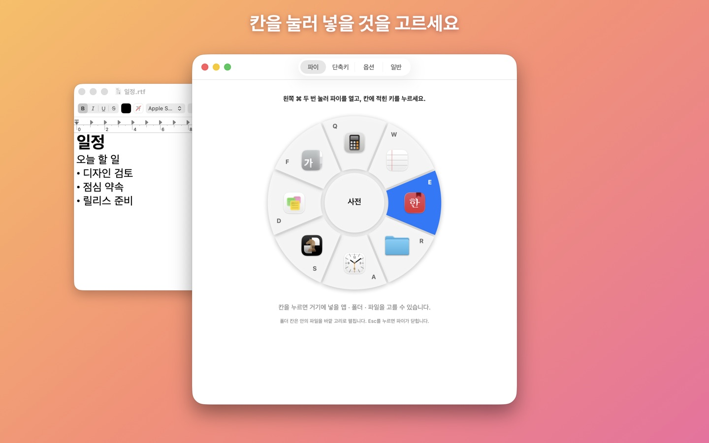

⌘ 두 번, 그리고 키 하나
Command를 두 번 누르면 자주 쓰는 앱이 담긴 파이가 커서 자리에 열립니다. Q, W, E, R, A, S, D, F 중 하나를 누르면 그 앱이 앞으로 옵니다. 한 손으로, 두 박자에, 아이콘을 찾지 않고.
macOS 14 이상 · Apple Silicon과 Intel
쓰는 방법
Command를 두 번 누릅니다
왼쪽 Command를 빠르게 두 번 누르면 커서 자리에 파이가 열립니다. 키를 길게 누르거나 ⌘C 같은 단축키로 쓸 때는 열리지 않습니다.
칸에 적힌 키를 누릅니다
여덟 칸에 왼손 자리의 키 여덟 개, Q W E R과 A S D F. 그 앱이 앞으로 옵니다. 같은 키를 한 번 더 누르면 숨습니다.
폴더는 한 번 더 펼쳐집니다
칸에 폴더를 넣으면 안의 파일이 바깥 고리에 나옵니다. 키를 하나 더 누르면 그 파일이 열립니다.
1분이면 끝나는 설정
처음 실행하면 지금 쓰는 앱으로 파이가 채워져 있습니다. 설정에는 파이가 그대로 그려져 있어서, 칸을 누르고 넣을 것을 고르면 됩니다. 실행 중인 앱이 맨 위에 나옵니다.

원하는 앱에 원하는 단축키
파이와 별개로, 어느 앱에든 전용 전역 단축키를 줄 수 있습니다. macOS 단축키나 다른 앱의 단축키와 겹치면 알려 줍니다. ShortcutManager 1.0의 단축키는 그대로 이어받습니다.
무료와 한 번의 결제
- 무료: 파이 세 칸(Q, W, E)과 전용 단축키 하나.
- 한 번 결제하면 여덟 칸 전부와 전용 단축키를 원하는 만큼 쓸 수 있습니다.
- 구독이 아닙니다. 계정도 없습니다.